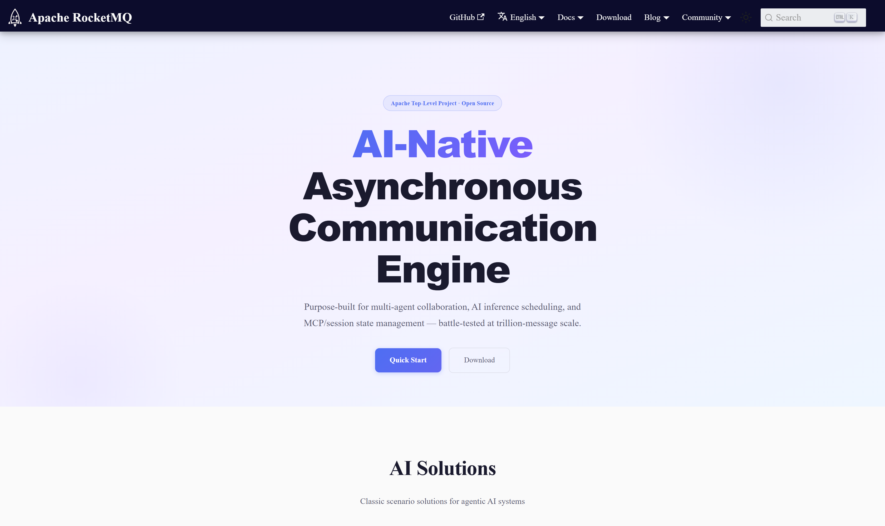
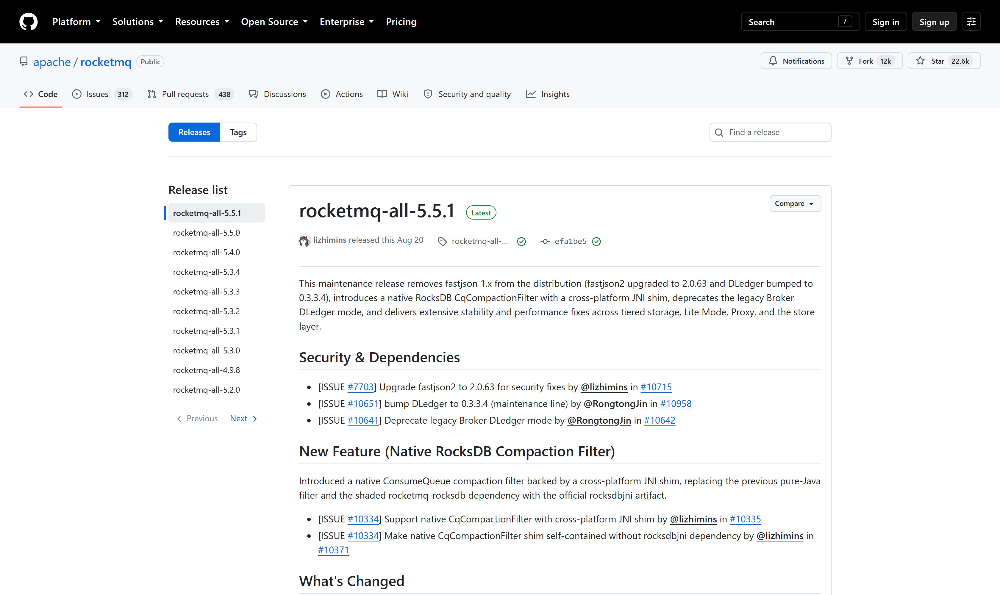
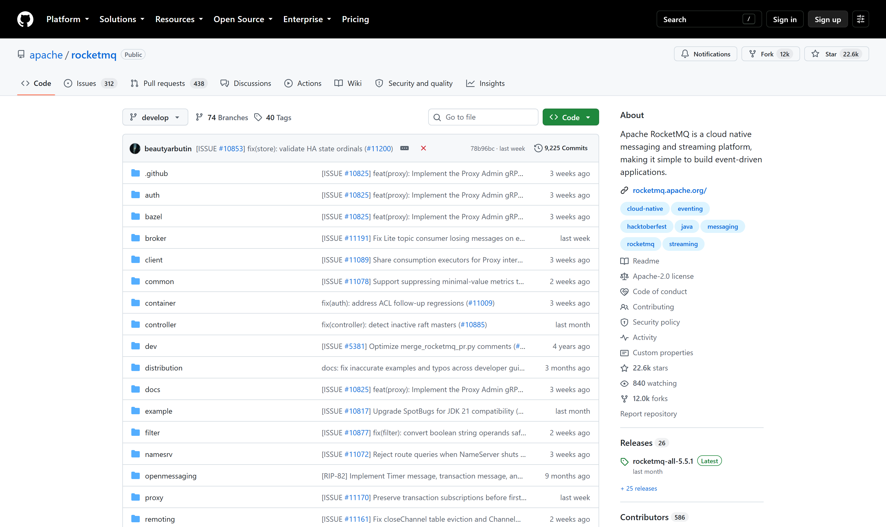

OSS PROJECT INTRO · APACHE ROCKETMQ 系列第 1 期：认识项目
今天开启新项目 Apache RocketMQ——官网自述 AI-Native Asynchronous Communication Engine，而它更广为人知的身份是：从阿里双 11 交易主链路里磨出来、后捐赠给 Apache 的开源消息队列。消息队列三强各占生态位：Kafka 长于吞吐与流生态，Pulsar 主打存算分离与多租户，RocketMQ 的立身之本是交易级可靠性与业务消息能力——定时、事务、顺序消息开箱即用。一句话心智模型：RocketMQ 是一台"轻量注册中心 + 顺序写存储引擎"打底、为交易场景长出全套业务消息特性的消息中间件。本期结束，你能答上四个问题：它是什么、从哪来、三强格局里凭什么站一极、5.x 架构往哪演进。

没有消息队列的微服务架构长这样：下单服务调用库存服务、再调用积分服务、再调用通知服务，一条同步链穿到底。平时能跑，一到流量洪峰就露出三处裂缝：耦合——下游任何一个服务抖动，整条链跟着超时，上游却只是"想通知你一声"；洪峰——瞬时流量超过下游处理能力，限流熔断救得了一时，堆积极请求又把内存压垮；峰值算力——为了双 11 那几分钟的峰值给所有下游配足机器，平日全是浪费。
消息队列给出的答案是异步化削峰：上游只管把"事件"投递出去就算完成，下游按自己的节奏消费，洪峰被水库蓄住再匀速放水。但"有一个队列"和"交易场景敢用"之间隔着一条鸿沟：消息不能丢、不能重得离谱、该按序的必须按序、支付回调必须准点——这些正是 RocketMQ 的主场。
Apache RocketMQ 是一个分布式消息与流平台：Java 编写，Apache-2.0 许可，2012 年前后从阿里内部消息引擎演进开源，2015 年进入 Apache 孵化器，2016 年毕业成为顶级项目。GitHub 仓库 About 栏的自我介绍是 "a cloud native messaging and streaming platform"——云原生消息与流处理平台。它在阿里的出身决定了性格：为交易而生，把"消息不丢"当底线，把交易场景需要的消息形态（定时、事务、顺序）做成内置能力。
一句话心智模型：一个"不管协奏曲"的三层架构——轻量的 NameServer 只管路由，Broker 集群管存储与收发，客户端自己缓存路由自主决策。NameServer 彼此独立、无状态、不互联，挂掉一台不换脑子照样服务；存储层把所有消息顺序写进统一日志（CommitLog），再由后台线程分发到各队列的索引。简单、可靠、好运维，是它能在国内成为消息队列事实标准之一的底层原因。
来源注记——rocketmq.apache.org 首页（2026-09-30 核对）：口号 AI-Native Asynchronous Communication Engine；GitHub apache/rocketmq 仓库（2026-09-30 核对）：Star 约 22.6k · Fork 约 12k · Apache-2.0 · Contributors 586 · Releases 26，About 原文 "a cloud native messaging and streaming platform"。
读这张图的三个要点：第一，路由与存储分离——NameServer 是"通讯录"不是"仓库"，知道每个 Topic 的队列在哪个 Broker 上，自己不碰一条消息；第二，一切消息先顺序写 CommitLog——不管什么类型、哪个 Topic，混在一起追加写，把磁盘随机写变成顺序写，这是高吞吐低延迟的物理基础；第三，消费者组的横向扩容——一组消费者分摊一个 Topic 的队列，加机器就加消费能力。第 3 期把这三点逐个拆开。
RocketMQ 不是实验室作品。它的前身是阿里的消息中间件，为应对大促而演进：早期产品解决"服务间异步解耦"，随后参考 Kafka 的存储思路用 Java 重写，2012 年前后以 RocketMQ 之名开源，2015 年进入 Apache 孵化器，2016 年毕业成为 Apache 顶级项目。关键在于它服务的场景：历年双 11 大促的交易主链路——下单、扣减、支付、通知——都压在它身上。交易场景对消息系统的要求是"最苛刻的一档"：钱相关的消息丢一条都是事故，订单消息乱序就是资损，支付超时回调晚一秒就是客诉。
这段出身解释了它的产品取向：与"吞吐至上"的大数据管道路线不同，RocketMQ 把交易级可靠性与业务消息语义做成了内置能力——同步刷盘与主从复制保不丢、队列级顺序消息保乱序不发生、事务消息用半消息加回查解决"本地事务与发消息的一致性"、定时消息支撑超时关单这类交易节奏。官网那句"battle-tested at trillion-message scale"（万亿级消息规模下久经考验），说的正是这段淬炼。国内互联网公司的消息选型里，"交易与业务消息看 RocketMQ"由此成为默认共识之一。
来源注记——Apache 官方项目页与 rocketmq.apache.org About/博客区（2026-09-30 核对）：Apache 顶级项目身份；官网首页 "battle-tested at trillion-message scale" 原文；孵化与毕业年份以 Apache 官方项目名录为准。
聊 RocketMQ 绕不开另外两个名字。三强都是成熟的生产级系统，差异在基因与生态位，而非简单的强弱——只作技术对比：
| 维度 | Kafka | RocketMQ | Pulsar |
|---|---|---|---|
| 出身场景 | 日志管道与流数据 | 交易与业务消息 | 多租户云原生消息 |
| 存储模型 | 分区日志，分区即文件 | 统一 CommitLog + 队列索引 | BookKeeper 存算分离 |
| 特色消息 | 以流为核心，无内置定时/事务业务语义 | 定时、事务、顺序开箱即用 | 分层存储、紧凑功能集，类型能力靠外围补齐 |
| 协调组件 | 早期依赖 ZooKeeper，后内置 KRaft | 自研 NameServer，轻量无状态 | ZooKeeper/Oxia 元数据 |
| 生态强项 | 流处理与大数据管道事实标准 | 业务集成与运维心智国内最普及 | 多租户、跨地域复制、函数计算 |
选型口径一句话：日志与流管道看 Kafka，交易与业务消息看 RocketMQ，多租户与存算分离刚需再看 Pulsar。多数业务系统要的是"交易语义齐全 + 团队会运维"，这正是 RocketMQ 在国内存量最大的原因。
4.x 时代的部署形态是三件套：NameServer、Broker、加上直连 Broker 的 Java 客户端（Remoting 协议）。5.x 在保留这套经典形态的同时做了三条演进线，官网称之为"云原生升级"：
架构师的读法：4.x 形态依然是生产主力，5.x 是同一套核心概念的弹性化外壳——NameServer 路由、CommitLog 顺序写、消费者组这些根基没变，变的是接入方式与弹性边界。学概念按经典形态学，上生产按 5.x 部署，一套知识两代架构通用。
以 2026-09-30 核对为准：GitHub apache/rocketmq 仓库 Releases 列表 Latest 标记是 rocketmq-all-5.5.1，2026-08-20 发布——维护版性质，移除 fastjson 1.x（fastjson2 升到 2.0.63）、废弃传统 Broker DLedger 模式、引入原生 RocksDB 压缩过滤器，并带大量稳定性修复。往下是 5.5.0（2026-04-10）、5.4.0（2025-12-24）等 5.x 线版本；4.9.8 是 4.x 的最后维护版。

一个实务提醒：官网 Download 页的版本更新常常滞后于 GitHub Releases（核对时页面仍停留在 5.3.x），找"当前最新稳定版"请以 GitHub Releases 的 Latest 标记为准。本系列五期统一锚定 v5.5.1，文档站标 Version 5.0 的官方文档是概念主参考。
给一个三问决策框架，出现任一信号就值得认真评估 RocketMQ：
反过来的信号也要诚实：纯日志采集与大数据管道，Kafka 生态更顺；团队零 Java 运维经验又是多语言重度栈，需评估 Proxy 加 gRPC 客户端的新路线。第 2 期动手跑起来，第 3 期拆架构，第 4 期做订单一致性实战，第 5 期读存储引擎源码——五期学完，上面三问你能自己回答。
每题点击选项立即反馈 · 共 3 题
1. RocketMQ 的 NameServer 与 ZooKeeper 这类协调组件最大的不同是？
2. RocketMQ 存储高吞吐低延迟的物理基础是？
3. 5.x 相对 4.x 的架构演进，说法正确的是？
先给结论：埋点归 Kafka，订单履约与定时触达归 RocketMQ，物理上分集群。逐类看。埋点是典型的大数据管道：量极大、允许少量丢失、下游是流计算与数仓，Kafka 的分区日志模型与流生态在这里如鱼得水，RocketMQ 也能扛量但流生态集成不如前者顺。订单履约是交易消息的教科书场景：不丢要靠同步刷盘加主从复制，不乱序要靠队列级顺序消息，出问题要能按订单号查消息轨迹——这些是 RocketMQ 的内置能力，换 Kafka 都要应用层自建。定时触达更直接：Kafka 没有内置定时语义，要么轮询数据库要么自研延迟队列，RocketMQ 定时消息一条配置的事。三问之后再问一层运维边界：两类系统的故障域、容量模型、升级节奏都不同，混部会让"埋点洪峰打满磁盘"连累交易消息——消息基础设施的隔离成本，远低于故障联动成本。再补一句务实的话：如果团队已经有一个 Kafka 重集群加一个 RocketMQ 重集群，别为了"架构统一"做迁移，迁移的风险远大于多维护一套组件的烦。
关键是分清"路由错了"和"数据丢了"的代价等级。ZooKeeper 给出的是强一致视图，代价是写入要过仲裁、节点间要同步、运维要养一套 CP 组件；而消息路由的读多写少、容忍短暂陈旧：Broker 的地址几分钟不变，NameServer 上的路由表落后十几秒，客户端最坏情况是"连到一个已下线的 Broker，失败后重试别的"——用一次重试的代价，换掉整套强一致协调设施，这笔账在消息场景是划算的。更妙的是客户端设计放大了这种容忍：客户端拿到路由表后缓存在本地自主决策，NameServer 整体不可用几分钟，存量生产者消费者照常收发，只是不能发现新 Broker。这就是"无中心的弹性"：组件越少、依赖越浅，故障面越小。它不成立的场景也有明确特征：需要强一致的元数据决策时——比如主从切换的选主仲裁（一个 Broker 的从属关系必须是唯一的、全局认可的），RocketMQ 的解法是另加 Controller 组件做仲裁，而不是把 NameServer 做强；再比如服务发现的消费方对"绝不连到旧节点"有硬要求，弱一致路由就不合适。一句话收束：注册中心的选型不看强弱论高低，看业务把哪类错误的代价放得更大——消息路由错一次可重试，选主错一次就是双主脑裂。

带走这五句话：
下期预告：第 2 期《5 分钟跑起来》——两条命令起一个最小集群，用官方 Java 客户端发出第一条消息，顺手收下 mqadmin 常用命令与 Dashboard 管理台。
Primary source：RocketMQ 官方文档（rocketmq.apache.org/docs）——本期定位、版本与特性口径均出自官网、官方文档与 GitHub apache/rocketmq 仓库（基于 v5.5.1，2026-09-30 核对）。